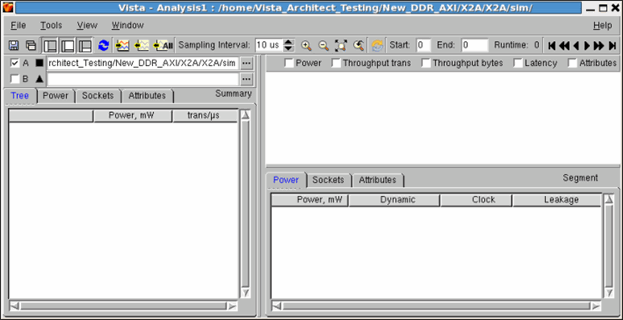
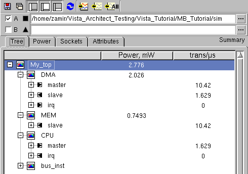
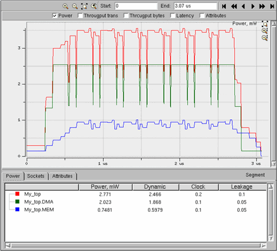

Viewing Analysis Output
You may view the distribution of events (transactions or variables) over time, or the statistical distribution of transactions, variables, and their associated power. You can analyze and compare multiple simulation sessions in a deterministic manner, in order to determine the effect of system configuration, protocol selection, software, and/or functionality on behavior and timing/power.
You can view and analyze selected data transfers with various granularities and under various scenarios -- for example:
- all data traffic for an instance of a model (containing accumulated data for all port traffic)
- selected transactions on a single port
Selecting a Simulation Database for Analysis
To select a database to be analyzed:
- Do one of the following to select a database before opening the Analysis window. (You may select databases after opening the window as well.)
- In the Browser, select the simulation database(s) that you wish to analyze.
- Open the Simulation window and start a simulation session.
- Click the Analysis tool or select Tools > Open Analysis.
The Analysis window appears as a separate window and the design elements are displayed in a tree in the left panel.
When there are analysis results to display, the resulting graphs and data tables are displayed in the right side of the window in the Graph pane and Report pane, and a summary data table is displayed on the left, to the right of the tree in the Browser pane.
You can show/hide any of the three panes using the toggle buttons in the Analysis toolbar.
Figure 14‑1.
Analysis Window

To select one or more simulation databases in the Analysis window:
- Use the browse buttons (...) adjacent to the fields at the top left of the window to select one or more simulation databases.
The design tree is displayed in the Browser pane (Tree tab).
Figure 14‑2.
Design Tree

- To include objects in the graph and data tables, select one or more objects in the Browser pane, and click Add Objects. (You can also double-click the desired objects, or use the right-mouse-button menu item Add to Graph.)
Specify which measurements to show as explained below in Specifying Analysis Types.)
The analysis results are displayed in three tabs, in the Graph and Report panes as well as in the columns to the right of the elements in the Browser design tree, as described below. In addition, the analyzed objects are added to the bottom of the Browser tree and color-coded icons are displayed to match with those plotted in the graph.
The types of data displayed depend on the types of objects included in the analysis. (If both instance objects and sockets are included, both Power and Throughput analysis types open.)
Figure 14‑3.
Tabs in the Analysis Result Pane

- To exclude objects from the graph and data tables, select one or more objects in the Browser pane or in the Report pane, and click Remove Objects. You can also use the right-mouse-button menu item Remove from Graph, or clear the data panes by clicking Remove All Objects.
- Select an object in the Tree tab or in the dynamic report (tab in the bottom pane) to highlight its plot on the graph.
- If you are analyzing a simulation that is still in progress, you can refresh the data using the Refresh tool; the data is automatically refreshed at regular intervals and when the simulation stops.
Specifying Analysis Types
To select one or more kinds of data to plot:
- Mark one or more checkboxes to display the measurements listed below or double-click an object to open the object default analysis type:
- Throughput transactions — measured activity of the selected objects within a specified time interval (measure in transactions)
- Throughput bytes — similar to above, in bytes
- Latency — average time it takes to complete a specific transaction type (such as a READ transaction or an Interrupt transaction) within a specified time interval. This displays all transactions of the selected type occurring in the simulation database, along with their associated latency times.
- Power — only shown for instances in a design. The graph shows the sum of dynamic power, clock tree and leakage.
- Power Distribution — the distributed power of modules instantiated from a top of the design (or sub-tree). The power of instances are shown one on top of the other, each has its own color. Power Distribution enables you to show the effect of each instance on the overall power consumption of the system at any time in simulation.
- Attributes — The values of attributes over time. Attribute analysis enables you to customize your specific analysis attributes by defining and computing the value of the user specific (MB) variables in the model.
- Bus Throughput — A Bus Throughput; sometimes referred to as the Bus Band-Width, is the throughput seen at the bus master socket (transactions data by time interval) broken to the specific contribution of each bus slave socket to it (Bus Throughput Forward). Similarly, the throughput seen at the bus slave socket, broken to the specific contribution of each bus master socket to it (Bus Throughput Backward).
Contributions are distinguished by color, which is specified automatically for each contributing slave/master socket of the bus.
Show “Unused bytes/time” — in case transaction data size is less than the bus width, the amount of un-used bytes will be shown on top of a specific area (proportionally) using same color with different style (also called “dead-space”).